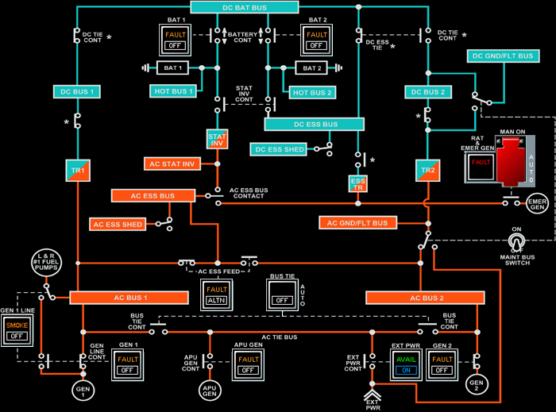

A320 Displays and Panels
MENU
BACK
FWD
INDEX
PANELS
SECTION 3.0
3.0 Electrical and Lighting
Electrical Control Panel
Electrical Schematic

Section 3.2.10
Previous Section
Commercial Switch
Battery Indicator
Battery Switches
AC Essential Feed Switch
Galley and Cabin Switch
IDG Switch
Generator Switch
APU Generator Switch
Bus Tie Switch
External Power Switch
Electrical Schematic
Next Section